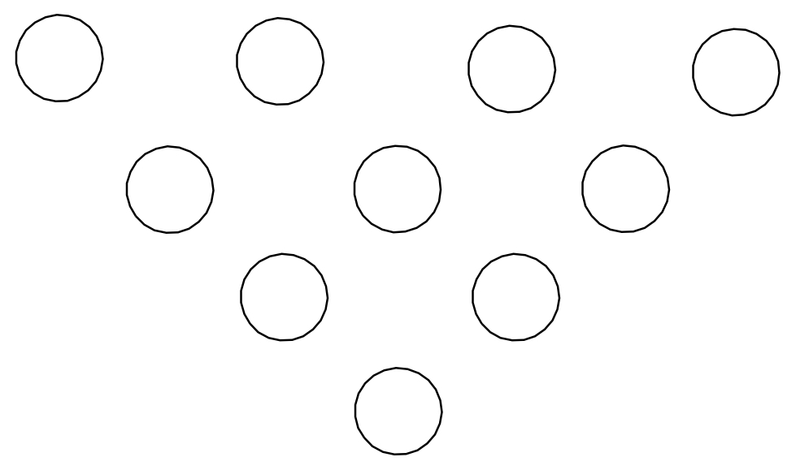
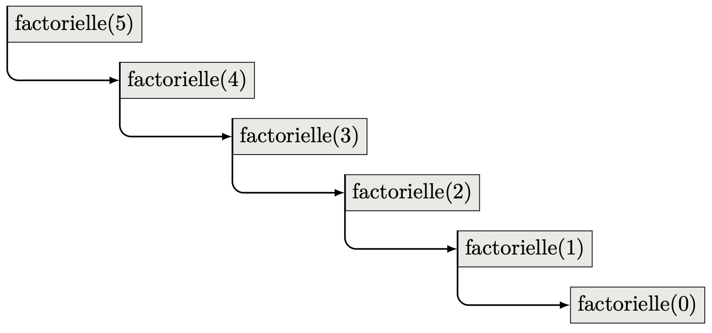

La récurrence est un raisonnement mathématique courant et parmi les plus puissants pour démontrer des théorèmes ou construire des objets. Par exemple, on l’utilise dans un cours de mathématique de lycée pour montrer que :
- Pour tout entier $n \geqslant 0$, on a : $1 + 2 + 3 + \ldots + n = \dfrac{n(n+1)}{2}$ ;
- Un entier naturel n’est autre que 0 ou le successeur d’un entier naturel (0 est 0, 1 est le successeur de 0, 2 est le successeur de 1, …).
En programmation, on peut raisonner de façon identique, nous allons construire des fonctions et des structures de données (listes chaînées, arbres, etc.) à l’aide d’une hypothèse de récurrence et d’un point de départ. Le déroulement de la récurrence sera quant à lui pris en charge par la machine.
while ou for). C’est un mode de pensée qui permet de concevoir des fonctions ou des structures de données (listes chaînées, arbres, etc.) dont l’écriture condense en peu de lignes l’exécution de calculs éventuellement très longs.
Ce chapitre traite de la récursion sur les nombres entiers.
Rappels sur les fonctions
Définition récursive d’une fonction
Factorielle d’un entier naturel
La fonction factorielle indique le nombre de permutations dans un ensemble comportant $n$ éléments. Par exemple, il existe $3! = 6$ façons d’arranger les 3 caractères ‘a’, ‘b’, ‘c’ :
‘abc’, ‘acb’, ‘bac’, ‘bca’, ‘cab’ et ‘cba’.
On peut exprimer de plusieurs façons la définition de cette fonction :
- Une définition implicite : $n! = 1 \times 2 \times 3 \times \ldots \times n$
- Une définition explicite : $$ n! = \left\lbrace \begin{array}{ll} 1 & \text{ si } n = 0 \cr n\times (n-1)! & \text{ si } n \geq 1 \cr \end{array} \right. $$
La première définition est particulièrement ambigüe :
- Que signifie l’ellipse … ?
- Est-il possible de calculer la factorielle d’un nombre inférieur à 3 ?
- La factorielle de 0 existe-t-elle ?
Les réponses à toutes ces questions sont évidentes pour une personne ayant suivi un cours de mathématique mais inaccessibles à un ordinateur.
La définition explicite, qui se réfère à elle-même, est dite récursive : la valeur de la fonction en $n$ s’exprime au moyen de la valeur de la fonction en $n-1$.
Une fonction définie de façon récursive est calculable.
Élévation à la puissance
On peut exprimer de plusieurs façons la définition de cette fonction :
- Une définition implicite : $x^n = \overbrace{x \times x \times \ldots \times x}^{n \text{fois}}$
- Une définition explicite1 : $$ x^n = \left\lbrace \begin{array}{ll} 1 & \text{ si } n = 0 \cr x \times x^{ (n-1)} & \text{ si } n > 0 \cr \end{array} \right. $$
La définition implicite présente les mêmes ambiguïtés que dans le cas du calcul de la factorielle d’un entier naturel, tandis que la définition explicite, qui se réfère elle-aussi à elle-même et est donc récursive, permet de calculer la valeur de $x^n$.
Mise en œuvre d’un raisonnement récursif : le jeu de Bowling
La disposition des quilles de Bowling permet d’illustrer la mise en œuvre d’un raisonnement récursif :
- Combien de quilles composent l’arrangement présenté ?
Réponse
10
- On veut ajouter une cinquième ligne à l’arrangement présenté. Combien de quilles supplémentaires devront être disposées si l’on souhaite respecter la logique présente ?
Réponse
5
- De combien de quilles sera alors constitué l’arrangement ?
Réponse
$10+5=15$
| Nombre de lignes | Nombre de quilles | Calcul du nombre de quilles |
|---|---|---|
| 1 | 1 | arrangement(1) |
| 2 | 3 | 2 + arrangement(1) |
| 3 | 6 | 3 + arrangement(2) |
| 4 | 10 | 4 + arrangement(3) |
| 5 | 15 | 5 + arrangement(4) |
Nombre de quilles en fonction du nombre de lignes. La fonction arrangement reçoit en argument le nombre de lignes et retourne le nombre de quilles dans un arrangement de ce nombre de lignes.
- Combien de quilles contient un arrangement de 11 lignes ?
- On déduit rapidement du tableau ci-dessus que le nombre de quilles est égal à : 11 +
arrangement(10), c’est à dire à 11 plus le nombre de quilles présentes dans un arrangement à 10 lignes. - Obtient-on directement la réponse ?
- Non, il faut tout d’abord calculer le nombre de quilles dans un arrangement à 10 lignes. Le calcul est facile, c’est : 10 +
arrangement(9), etc. - Quand faut-il s’arrêter ?
- On sait que
arrangement(1)= 1. On s’arrête donc lorsque l’on est parvenu à un arrangement à 1 ligne.
Le raisonnement précédent est un raisonnement récursif. On a découpé le problème en deux parties :
-
Si l’arrangement comporte une seule ligne, la réponse est :
arrangement(1)= 1. -
Si l’arrangement comporte $N$ lignes, la réponse est : N +
arrangement(N - 1).
Calcul effectif du nombre de quilles dans un arrangement à 5 lignes.
$$ \begin{aligned} \text{arrangement} (5) & = 5 + \text{arrangement} (4) \cr & = 5 + (4 + \text{arrangement} (3)) \cr & = 5 + (4 + (3 + \text{arrangement} (2))) \cr & = 5 + (4 + (3 + (2 + \text{arrangement} (1)))) \cr & = 5 + (4 + (3 + (2 + (1)))) \cr & = 5 + (4 + (3 + 3)) \cr & = 5 + (4 + 6) \cr & = 5 + 10 \cr & = 15 \end{aligned} $$
Algorithme récursif
Un algorithme est simplement récursif s’il s’appelle lui-même pour effectuer son traitement.
Il est impératif de veiller à ce qu’un algorithme récursif se termine sous peine d’engendrer un processus infini !
Implémentation de l’algorithme en Python
|
|
Retour sur le calcul de la factorielle d’un entier naturel
On reprend ici le calcul de la factorielle de l’entier naturel $n$. La définition récursive de la fonction factorielle est donc :
$$ n! = \left\lbrace \begin{array}{ll} 1 & \text{ si } n = 0\cr n\times (n-1)! & \text{ si } n \geq 1\cr \end{array} \right. $$
Application : calcul de la factorielle de 5
- En prenant exemple sur le calcul effectif du nombre de quilles en fonction du nombre de ligne dans l’arrangement, calculer la valeur de $5!$ en détaillant toutes les étapes.
Réponse
$$ \begin{aligned} \text{factorielle} (5) & = 5 \times \text{factorielle} (4)\cr & = 5 \times (4 \times \text{factorielle} (3))\cr & = 5 \times (4 \times (3 \times \text{factorielle} (2)))\cr & = 5 \times (4 \times (3 \times (2 \times \text{factorielle} (1))))\cr & = 5 \times (4 \times (3 \times (2 \times (1 \times \text{factorielle} (0)))))\cr & = 5 \times (4 \times (3 \times (2 \times (1 \times 1))))\cr & = 5 \times (4 \times (3 \times (2 \times 1)))\cr & = 5 \times (4 \times (3 \times 2))\cr & = 5 \times (4 \times 6)\cr & = 5\times 24\cr & = 120 \end{aligned} $$
Arbre des appels
L’arbre des appels est une représentation arborescente faisant apparaître les appels récursifs jusqu’au cas de base.
Implémentation de l’algorithme récursif en Python
|
|
Définition récursive d’une fonction
La définition récursive d’une fonction doit être formée :
- d’un ou plusieurs cas de base, qui ne doivent contenir aucun appel récursif ;
- d’un ou plusieurs appel(s) récursif(s) au cours desquels la fonction s’appelle elle-même.
Remarques.
- Il est impératif que le cas de base soit réalisé à une étape du processus, sous peine d’obtenir une récursion infinie.
- Les appels récursifs n’apparaissent pas de façon évidente dans le cas de la récursivité croisée (cf. exercices).
Ensembles bien fondés
La récursion sur les entiers naturels consiste à transformer un problème sur un entier naturel $n$ en un ou plusieurs problèmes sur des nombres plus petits. Comme il n’existe pas de suite infinie strictement décroissante dans l’ensemble des entiers naturels, la récursion finit par atteindre un cas de base comme 0 (ou 1, ou …) pour lequel une solution directe au problème est fournie.
L’ensemble des entiers naturels est dit « bien fondé ».
Récursivité vs itération
La récursivité et l’itération sont deux paradigmes2 différents ayant le même objectif : faire effectuer des traitements répétitifs à un ordinateur.
Récursivité, Itération
-
Un algorithme itératif décrit comment doivent être transformées les données pour parvenir à résoudre le problème.
À chaque « tour de boucle » des affectations sont réalisées. -
Un algorithme récursif définit, au sens mathématique du terme, le traitement à mettre en œuvre pour parvenir à résoudre le problème.
Cet algorithme ne s’appuie généralement pas sur la notion d’affectation (Nous reviendrons sur cette partie lorsque nous parlerons des différents paradigmes de programmation). -
Tout problème dont la résolution s’appuie sur un algorithme récursif peut aussi être résolu à l’aide d’un algorithme itératif (plus ou moins simplement).
-
Tout problème dont la résolution s’appuie sur un algorithme itératif peut aussi être résolu à l’aide d’un algorithme récursif.
-
Les algorithmes récursifs sont généralement plus simples à comprendre que les algorithmes itératifs correspondant.
Exemple.
- L’algorithme récursif du calcul de la factorielle d’un nombre définit cette factorielle.
- L’algorithme itératif indique qu’il faut multiplier 1 par 2, stocker le résultat de ce calcul dans une variable, multiplier le contenu de cette variable par 3, …, jusqu’à $n$.
Certains langages informatiques appelés langages fonctionnels, ne possèdent ni instruction d’affectation ni structure itérative !
Les langages qui privilégient les structures itératives (et l’affectation) sont dits impératifs.
Python est un langage mutli-paradigme : il permet de programmer de façon impérative, objet ou fonctionnelle (même si les appels récursifs, par exemple, ne sont pas aussi bien optimisés en Python que dans les langages fonctionnels).
Pourquoi ne pas toujours utiliser la récursivité ?
Un algorithme récursif est généralement plus facile à comprendre que l’équivalent itératif. On peut donc se demander pourquoi on ne privilégie pas toujours les traitements récursifs.
Généralement, les appels récursifs successifs nécessitent plus d’espace mémoire et de traitements — sachant que les processeurs ont, eux, un fonctionnement fondamentalement itératif — que les processus itératifs.
Les langages fonctionnels modernes possèdent des compilateurs ou des interpréteurs suffisamment « intelligents » pour palier à ces inconvénients.
Si l’on devait résumer l’idée générale de la récursivité
- Si un problème est facile à résoudre, le résoudre immédiatement.
- C’est le cas de base.
- Si un problème n’est pas facile à résoudre, le découper en problèmes plus petits. Résoudre les plus petits problèmes.
- Ce sont les appels récursifs.
Exercices du chapitre
Penser à écrire, pour chacune des fonctions ci-dessous, sa spécification ainsi qu’un jeu de tests.
Un corrigé partiel se trouve en ligne à cette adresse :
https://repl.it/join/qaeylksn-dlatreyte
. Ce corrigé comporte des exemples d’utilisation de l’instruction assert.
Exercice 1 : Factorielle
Écrire la définition itérative de la fonction factorielle.
Solution
|
|
Exercice 2 : Compte à rebours
- Écrire une fonction récursive qui, à partir d’un argument entier, affiche un compte à rebours.
- En modifiant seulement la position de la fonction
print, faire en sorte que le comptage se fasse dans l’ordre croissant.
Solution
|
|
Exercice 3 : Somme des $N$ premiers entiers
Écrire les versions itérative et récursive d’une fonction qui calcule la somme des $N$ premiers entiers. La tester pour $N = 15$.
Solution
|
|
Exercice 4 : Multiplication récursive
Écrire une fonction récursive qui calcule le produit de deux nombres entiers positifs en utilisant des additions.
Le principe est le suivant : $$ a \times b = \left\lbrace \begin{array}{ll} 0 & \text{ si } a = 0\cr (a-1) \times b + b & \text{ si } a > 0\cr \end{array} \right. $$
Exécuter la fonction pour $a = 4$ et $b = 5$ (pour cela, présenter les appels récursifs successifs sous forme d’un arbre), puis pour $a = 5$ et $b = 4$.
Pour quel appel l’arbre est-il le plus grand ?
Noter sur quel argument porte la récursion.
Que peut-on en conclure ?
Solution
|
|
Exercice 5 : Calculs de puissances
-
Écrire une fonction récursive qui calcule $x^n$ sachant que : $$ x^n = \left\lbrace \begin{array}{ll} 1 & \text{ si } n = 0 \cr x^{n-1} \times x & \text{ si } n > 0 \cr \end{array} \right. $$
-
Écrire une fonction récursive qui calcule $x^n$ sachant que : $$ x^n = \left\lbrace \begin{array}{ll} 1 & \text{ si } n = 0\cr (x^{n/2})^2 & \text{ si } n > 0 \text{ pair}\cr (x^{(n-1)/2})^2 \times x & \text{ si } n > 0 \text{ impair}\cr \end{array} \right. $$
-
Comparer les exécutions (avec arbre des appels) des deux fonctions ci-dessus pour $n = 11$ et $x = 2$. Quel est l’arbre le plus court ? Que peut-on en conclure ?
Solutions
|
|
Exercice 6 : Suite de Fibonacci
-
Écrire une fonction récursive qui calcule le $n^{\text{ième}}$ terme de la « suite de Fibonacci » définie par : $$ \begin{aligned} u_0 & = 0 \cr u_1 & = 1 \cr u_n & = u_{n - 1} + u_{n - 2} \hspace{0.5cm} \text{pour } n \geqslant 2 \end{aligned} $$
Exécuter la fonction pour $n = 5$ -
L’arbre des appels est représenté sur la figure ci-dessous. Expliquer pourquoi cette fonction est très peu efficace.
Solution
|
|
Exercice 7 : Formule de Viète
On peut obtenir une valeur approchée du nombre $\pi$ grâce à la formule de Viète : $$ \pi \approx 2^k \sqrt{2 - \sqrt{2 + \sqrt{2 + \ldots \sqrt{ 2 + \sqrt 2 } } } } $$ où $k$ est le nombre de racines carrées. Plus la valeur de $k$ est grande, meilleure est l’approximation.
On constate que la partie $s = 2 + \sqrt{2 + \ldots \sqrt{ 2 + \sqrt 2 } }$ est récursive.
- Écrire une fonction récursive nommée
calcul_inter, qui, à partir d’un entier positif $k$, calcule la valeur de la partie $s$. - Écrire une fonction nommée
calcul_pi, qui, à partir d’un entier positif $k$, calcule la valeur approchée de $\pi$.
Cette fonction doit appeler la fonction
calcul_inter.
- Depuis la fonction
main, appeler la fonctioncalcul_piavec plusieurs valeurs de $k$ (essayer 5, 10, 15). Comparer au résultat retourné par l’attributpidu modulemath.
Exercice 8 : Plus grand diviseur commun
Écrire une fonction récursive qui retourne le plus grand diviseur commun de deux entiers passés comme arguments. On se servira de l’algorithme d’Euclide : $$ \text{pgcd}(m,n) = \left\lbrace \begin{array}{ll} m & \text{ si } n = 0\cr \text{pgcd}(n,m) & \text{ si } m < n \cr \text{pgcd}(n, m , \text{mod}, n) & \text{ sinon }\cr \end{array} \right. $$
Solution
|
|
Exercice 9 : Ackermann-Péter
La fonction d’Ackermann-Péter est définie récursivement comme suit : $$ A(m,n) = \left\lbrace \begin{array}{ll} n+1 & \text{ si } m = 0\cr A(m-1,1) & \text{ si } m > 0 \text{ et } n = 0 \cr A(m-1, A(m, n-1)) & \text{ si } m > 0 \text{ et } n > 0\cr \end{array} \right. $$ Écrire une fonction qui, à partir de deux arguments $m$ et $n$, calcule $A(m,n)$. La tester avec les valeurs $m=3$, $n=4$.
Remarques.
- La fonction d’Ackermann croît extrêmement rapidement : $A(4,2)$ a déjà $\pu{19\,729}$ chiffres !
- La fonction d’Ackermann demandant beaucoup de calculs même pour de petites entrées, elle est parfois utilisée comme programme de test d’une implémentation d’un langage de programmation : en particulier, elle utilise de façon très exigeante la récursivité (cf. Fonction d’Ackermann, Wikipédia).
Solution
|
|
Exercice 10 : Récursivité croisée
On considère deux suites $u(n)$ et $v(n)$ définies, pour $n \geq 0$ par : $$ \begin{array}{rcl} u(0) & = & 1\cr v(0) & = & 2\cr u(n) & = & 3 u(n-1) + 2 v(n-1)\cr v(n) & = & 2 u(n-1) + 3 v(n-1)\cr \end{array} $$ Ces deux suites ont pour particularité que : $v(n) - u(n) = 1$ pour tout $n$.
-
Écrire un programme qui, à l’aide de fonctions récursives, donne les valeurs de ces deux suites pour un $n$ donnée (tester avec $n=3$) et qui vérifie que la différence entre ces deux valeurs est égale à 1.
-
Établir les arbres des appels.
Solution
|
|
Exercice 10 : Fonctions mutuellement récursives
Le but de cet exercice consiste à écrire les fonctions récursives est_pair et est_impair sans utiliser le modulo.
La fonction est_pair (resp. est_impair) retourne True si son argument entier est pair (resp. impair).
- $n \in \mathbb{N}$ est impair si $n-1$ est pair.
- $n \in \mathbb{N}$ est pair si $n-1$ est impair.
- $0$ est pair.
- $0$ n’est pas impair.
Solution
|
|
Exercice 11 : Conjecture de Syracuse
On appelle suite de Syracuse une suite d’entiers naturels définie de la manière suivante : On part d’un nombre entier plus grand que zéro. S’il est pair, on le divise par 2 ; s’il est impair, on le multiplie par 3 et on ajoute 1. En répétant l’opération, on obtient une suite d’entiers positifs dont chacun ne dépend que de son prédécesseur.
Par exemple, à partir de 14, on construit la suite des nombres : $$ 14,7,22,11,34,17,52,26,13,40,20,10,5,16,8,4,2,1,4,2,\ldots $$ C’est ce qu’on appelle la suite de Syracuse du nombre 14. Une fois le nombre 1 atteint, la suite des valeurs $(1, 4, 2, 1, 4, 2, \ldots)$ se répète indéfiniment en un cycle de longueur 3 (appelé cycle trivial).
La conjecture de Syracuse (encore appelée conjecture de Collatz, ou conjecture d’Ulam) est l’hypothèse mathématique selon laquelle la suite de Syracuse de n’importe quel entier strictement positif atteint 1.
Écrire la fonction syracuse à un paramètre entier qui retourne la longueur de la suite de Syracuse de cet entier pour obtenir 1.
Solution
|
|